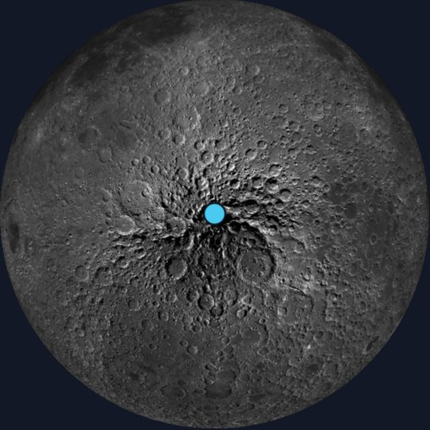
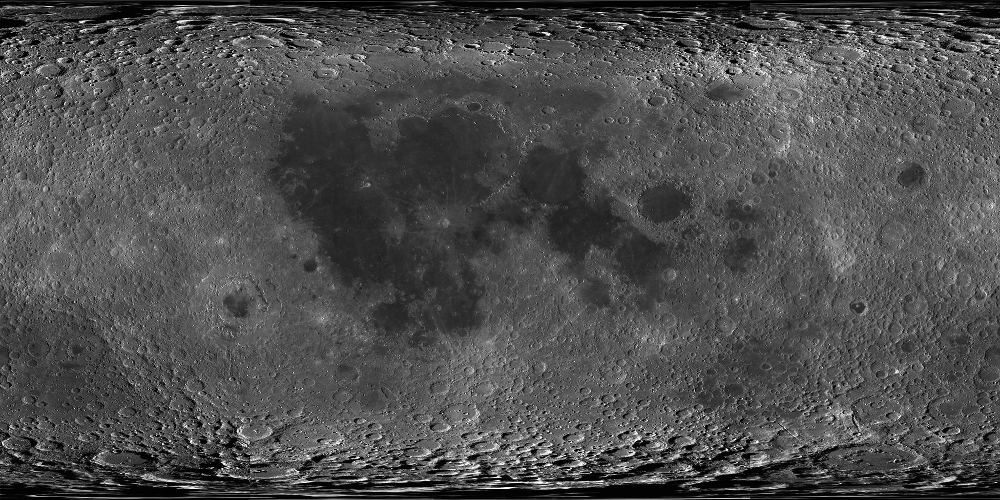
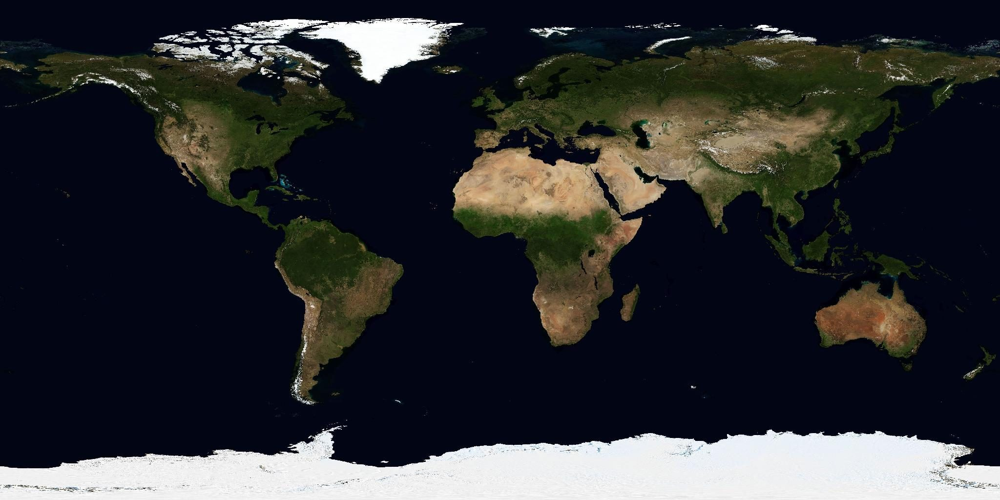
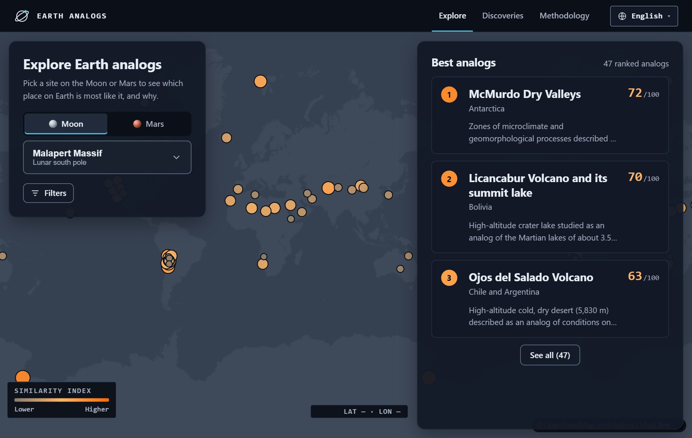
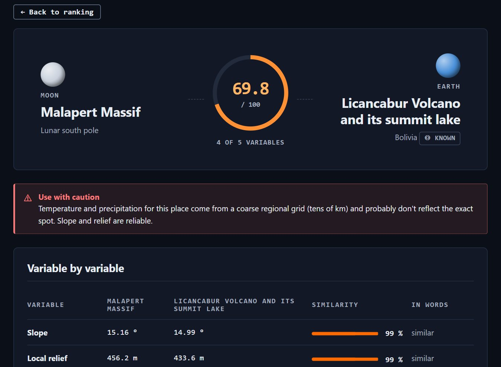
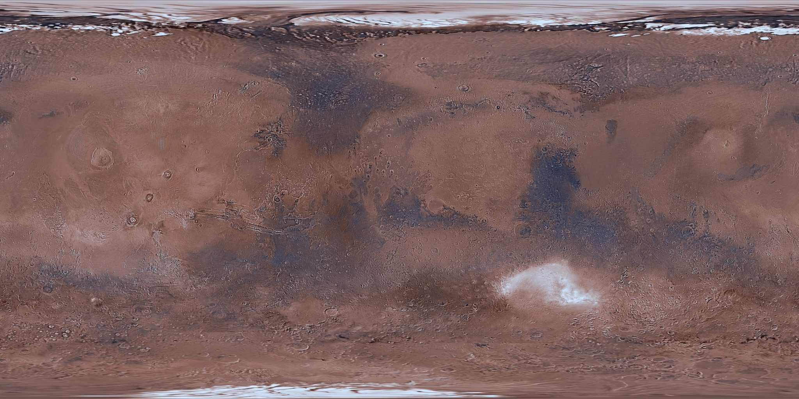
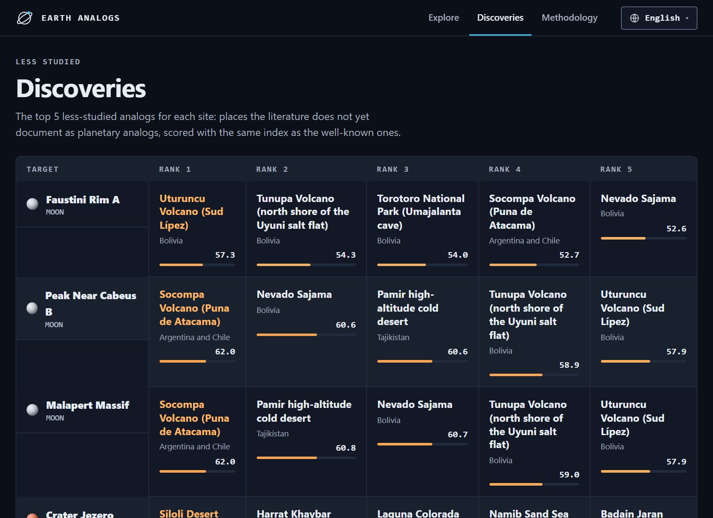
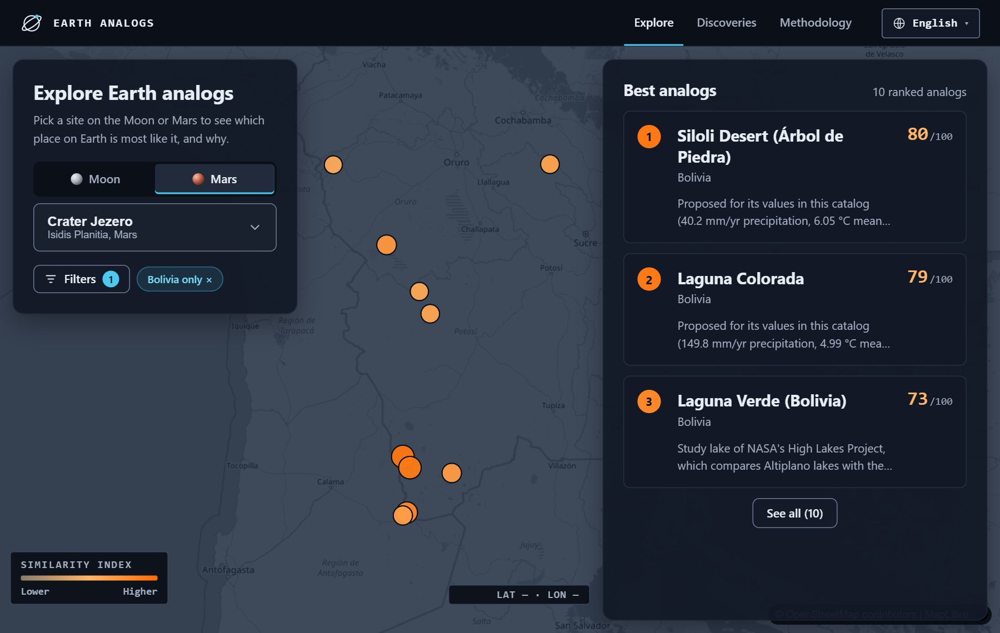

Measuring which places on Earth resemble the Moon and Mars, and where they don't.
Challenge: Identify Earth Locations that Analog the Permanent Moon Base Locations and Mars





LRO LOLA terrain and LRO Diviner temperature, at the lunar south pole.
MGS MOLA terrain and the Mars Climate Database (LMD, ESA, CNES).
NASA POWER (temperature, precipitation, CERES albedo) and SRTM-based elevation tiles on AWS; ESA's Copernicus DEM at four places.

The 3D globe uses NASA GIBS, Moon Trek and Mars Trek mosaics. Full sources and licenses: docs/ATRIBUCION.md. Produced using Copernicus WorldDEM-30 © DLR e.V. 2010-2014 and © Airbus Defence and Space GmbH 2014-2018 provided under COPERNICUS by the European Union and ESA; all rights reserved.

